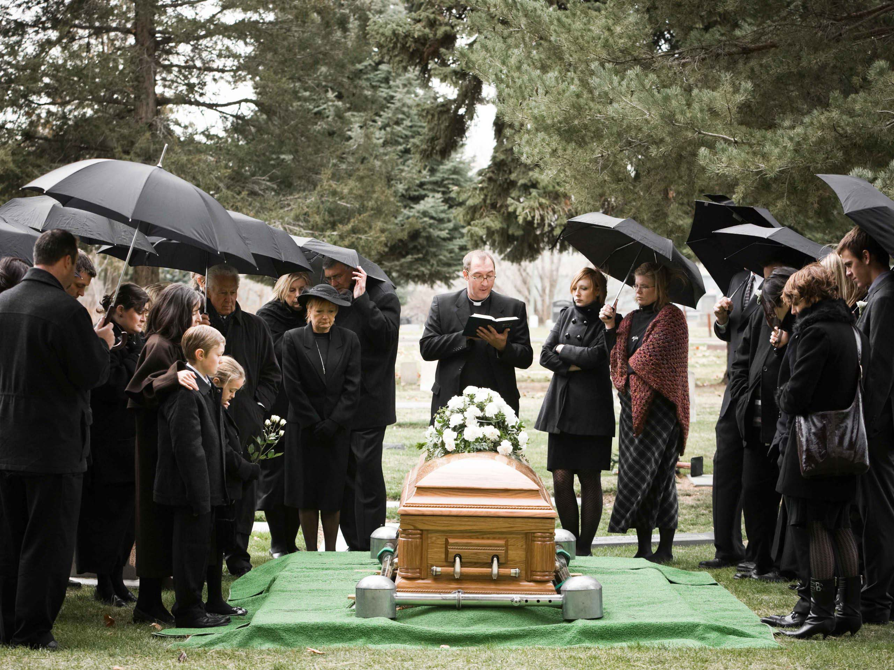
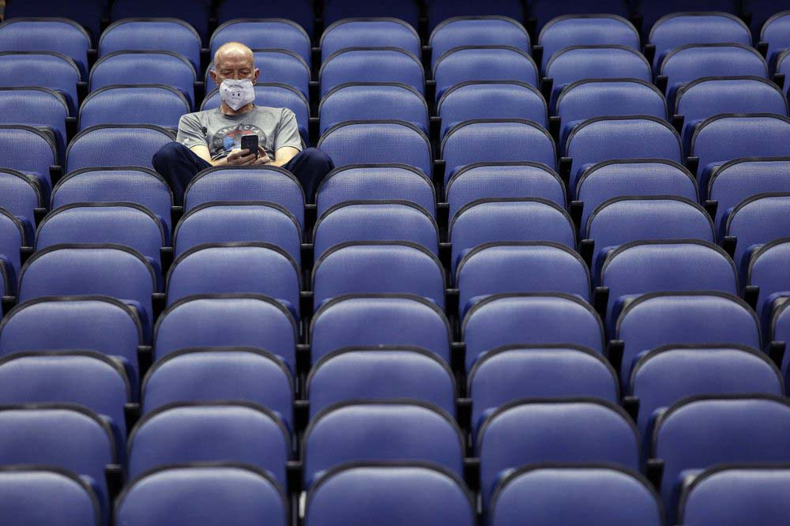
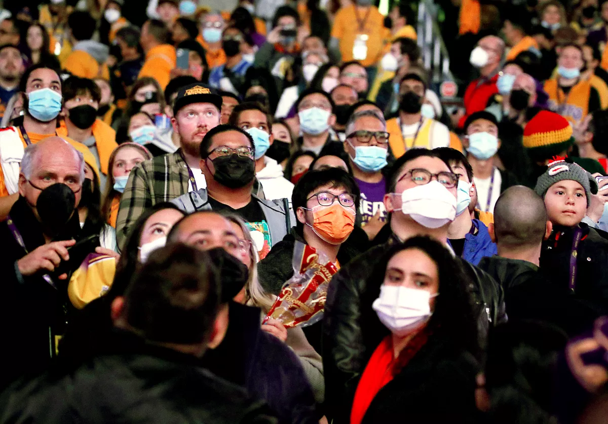

The coronavirus pandemic has had unprecedented, widespread impacts on households across America,
raising concerns about our ability to weather long-term health and financial harms. A substantial
share of households has not been protected from the severe impacts of the pandemic across many areas
of residents' lives. At least half of households in the four largest U.S. cities—New York City (53%),
Los Angeles (56%), Chicago (50%), and Houston (63%)—report severe financial problems, including depleted
savings, and trouble paying bills or affording medical care And not limited to just financial issues.
Lost Jobs
With businesses in the red, they were forced to let go of staff 43 percent of rural households report
adult household members lost their jobs, been furloughed, or had wages or hours reduced since the start
of the outbreak, with two-thirds of these households (66%) reporting severe financial problems. This
severely impacts families across the globe and causes them to worry about not being able to provide for
their families. But with all the new jobs the government created and businesses doing better, adults are
getting their jobs back every day.
Lost Family

Covid killed over 6 million people worldwide, which is crazy. So many families lost members. Nearly 8
million kids lost a parent or primary caregiver to the pandemic. This severely impacted many people
worldwide, and many worried about catching covid doing anything out of their houses. So many people
were very strict about quarantining, which severely affected their mental health.
Events Closed

With everyone in quarantine and government lockdowns, events got canceled. Professional sports got canceled
and delayed, and family traditions ended, concerts canceled, and so much more. This affected people since
people's personalities included these events. People used the event as an outlet for stress and to just had
a good time, and with these canceled, people just sat at home bored and depressed. Billions of dollars were
lost due to these events being canceled, which would have ended up being spent improving the economy.
The Mask Mandates

Mask mandates affected the community. People with health conditions were exempt, but what about the other
citizens? Autistic citizens experience sensory differently, so something like a mask affects their mental
health. Claustrophobic citizens sometimes have a mini panic attack from the mask. Many citizens hated masks
but were forced to wear them in public. People were arrested, and students were denied access to school for n
ot wearing masks.